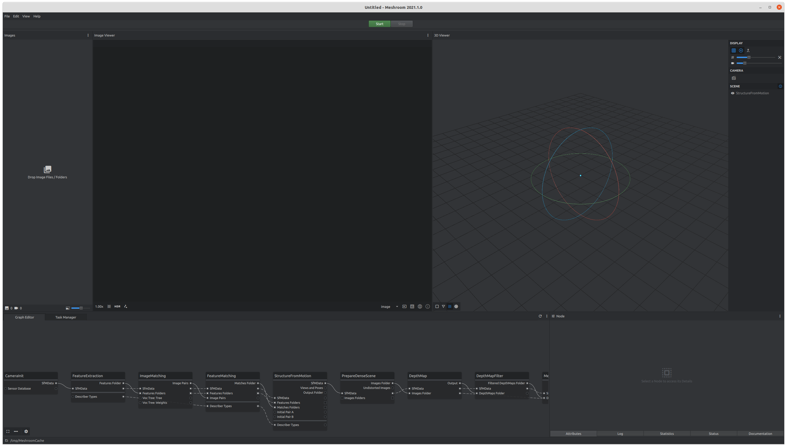

ADVANCED COMPUTER SCIENCE APPLICATIONS FOR CULTURAL HERITAGELaboratory
Ca' Foscari University
The RePAIR Project

Objectives
- Reconstruct accurate 3D model of broken frescoes
- Develop algorithms to virtually align the broken pieces to solve the puzzle
- Build and configure a robotic arm to assemble the broken parts
3D Reconstruction
 |
|
| Polyga H3 Scanner | Sony Alpha 7c Camera |
Questions?
- Is it possible to scan the complete surface of an object without moving it?
- What are the advantages of having a scanner (or a camera)? Which one would you choose?
3D Scanning
Raw Data: Top Part
| Front view | Back view |
|---|---|
 |
 |
Raw Data: Bottom Part
| Front view | Back view |
|---|---|
 |
 |
Processed Data
 |
 |
Scanning with a camera
Input Video
Input Images
3D Data
What kind of format is used for 3D data?

Point Clouds
Meshes
Compression for 3D data?
Road to our 3D scene
| Step | Task | Tool |
| Acquisition | capturing images | Camera or Phone |
| 3D Reconstruction | estimating 3D geometry from images | Meshroom |
| 3D Scene Modelling | preparing the scene and refining objects | Blender |
| 3D Scene Compression | scaling down the scene for usage | Meshlab |
Acquisition
Capturing the scene
- Trying to capture the object or the scene from every perspective.
- Ensure simultaneously enough overlapping and difference between images.
- Try to have similar light conditions across pictures.
- Around 50 picture can be a good standard.
3D Reconstruction
Meshroom
Example Workflow
Results
Example Workflow
Failure Case
 |
For the next time
- choose one object and one scene
- install Blender for 3D modelling
- create an account on Sketchfab